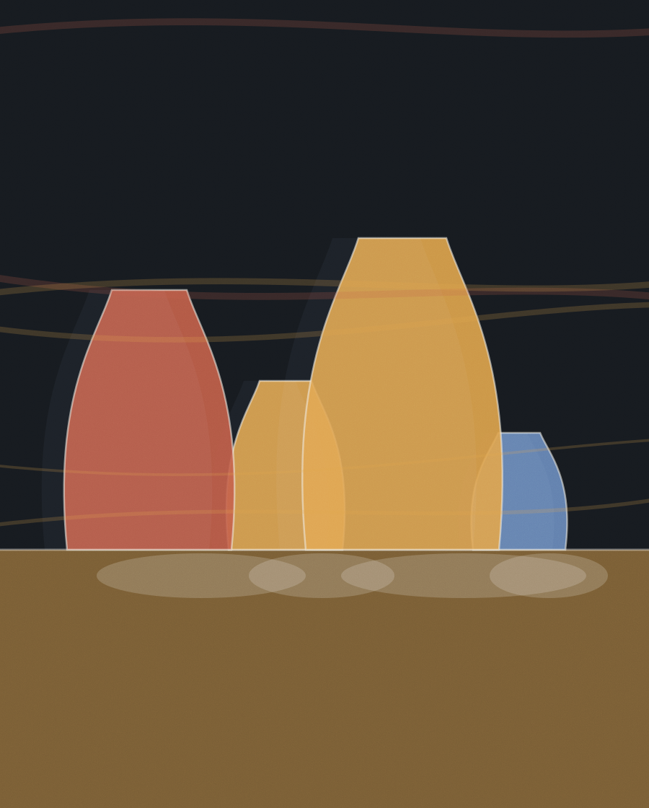
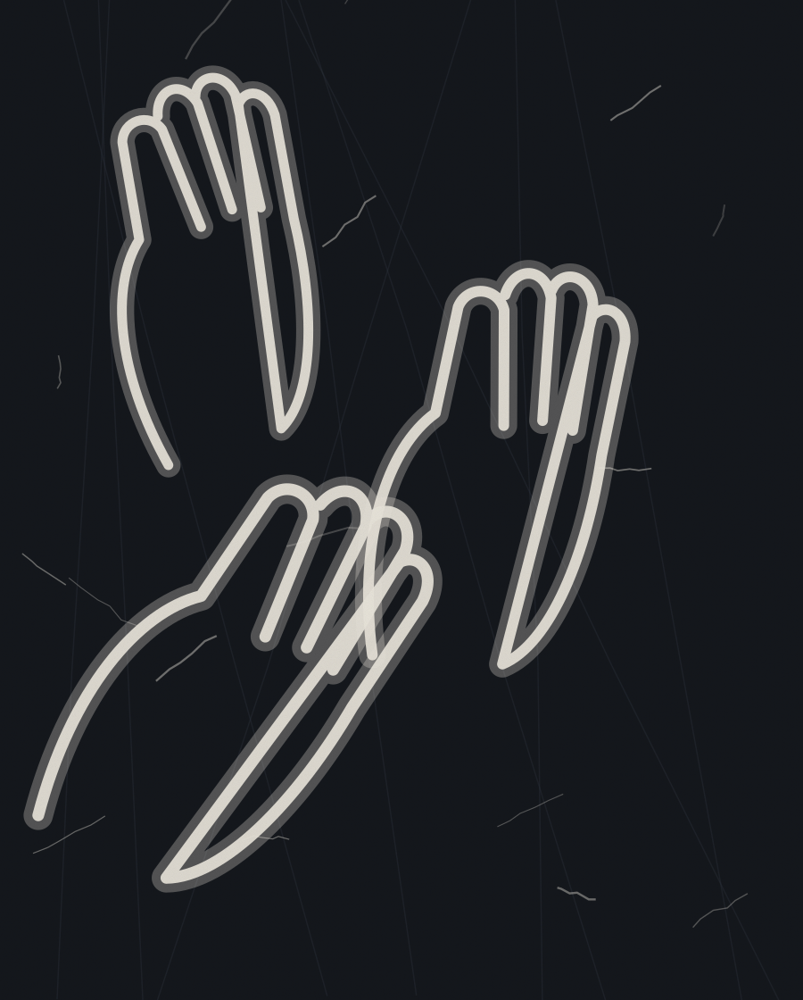
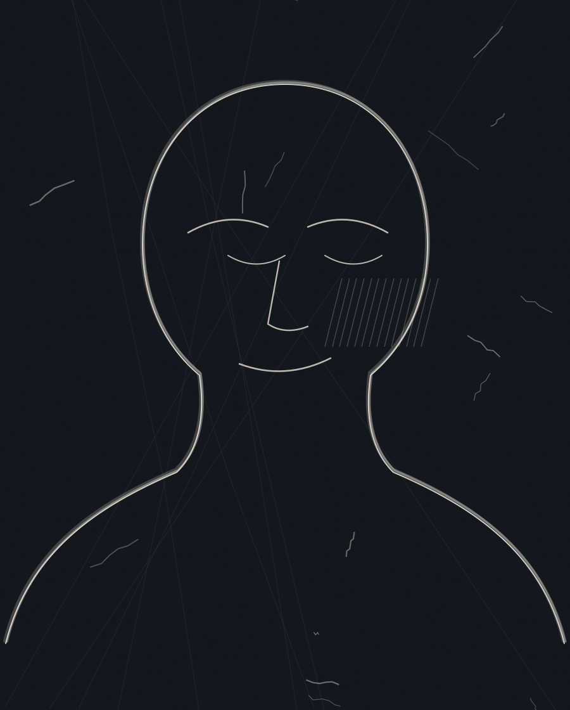
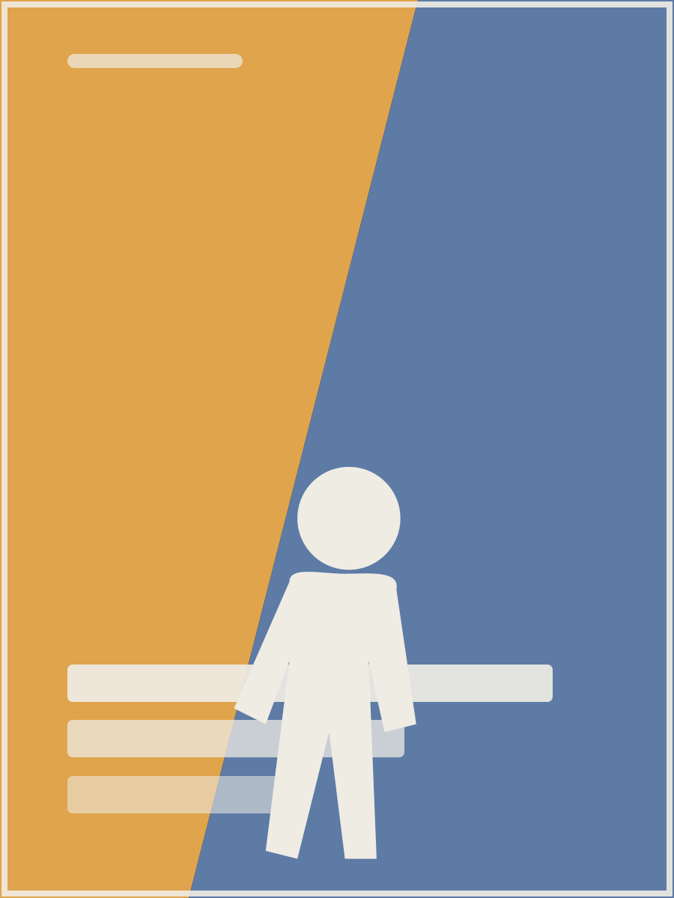

Low Pressure, finally off the easel
Nine weeks, two full scrapes and one week where I turned it to the wall. The still life underneath is still legible if you stand close, which I have decided to keep.

Underdrawing FinishedStudio journal · 2022–2026
This is the working record rather than the portfolio: sketches that went nowhere, print days that jammed, shows that opened, and the paintings that eventually came off the easel. Filter by the kind of entry, or jump to a year on the left.
Nine weeks, two full scrapes and one week where I turned it to the wall. The still life underneath is still legible if you stand close, which I have decided to keep.

Underdrawing FinishedA rule I set myself this spring: one brush drawing a week, ninety minutes, no under-drawing. Most are bad. This one is not.
Fifty pulls, two colours, and a jam at number thirty-one that put a beautiful crease through eight of them. Those eight are the seconds pile, sold cheap and honestly.
First solo since 2022. Four canvases, one wall, no wall text — just a sheet at the door. People stayed longer than I expected.
Scraping is not failure. It is how a surface acquires a memory. By the third pass the panel has opinions of its own about where the light should sit, and my job is mostly to agree with it.
The largest thing I have made and the one I understand least. Six weeks of thin layers. The lower left took four of them.

 Underdrawing
Finished
Underdrawing
Finished
Three hundred more. The kitchen table has a permanent dent from the signing. I am not complaining.
Every book has a page where somebody has to hold something convincingly and I have to relearn hands from scratch.
Fluorescent pink over federal blue at the co-op press. The registration drifts about a millimetre across the run, which is the entire reason to use a riso.
One sitting. Ninety minutes. The ink decided the top third before I did and I let it.
If you letter first, the drawing arranges itself politely around the words. If you letter last, the words have to fit the room the drawing left them, and they get shorter and better.
Two years, a hundred and twenty-eight pages, and a final week of correcting balloon tails at two in the morning.
Built from torn proofs of a print that had failed. Nothing in this studio is wasted, mostly because I cannot bring myself to throw it out.

 Underdrawing
Finished
Underdrawing
Finished
Two-person show at Fentiman. Drove the paintings down in a rented van with the seats out and did not breathe until they were on the wall.
The same two objects I have drawn since art school. They keep changing.
Three passes means three chances to ruin it. Twenty-five survived out of thirty-four attempts.
Ink and gouache, painted twice. The first version was better drawn and much worse.
Made the whole of The Long Way Down in eleven weeks on purpose, to see what speed does to drawing. It loosens it. It also nearly finished me.
First solo. Sold two drawings and gave one away to someone who stood in front of it for twenty minutes.
Thirty-two pages, risograph, edition of a hundred and twenty. The first thing I made that felt like mine rather than like homework.
No entries of that kind.
Behind the entries
Everything the journal refers to, gathered by medium. Click any piece to see it larger.

